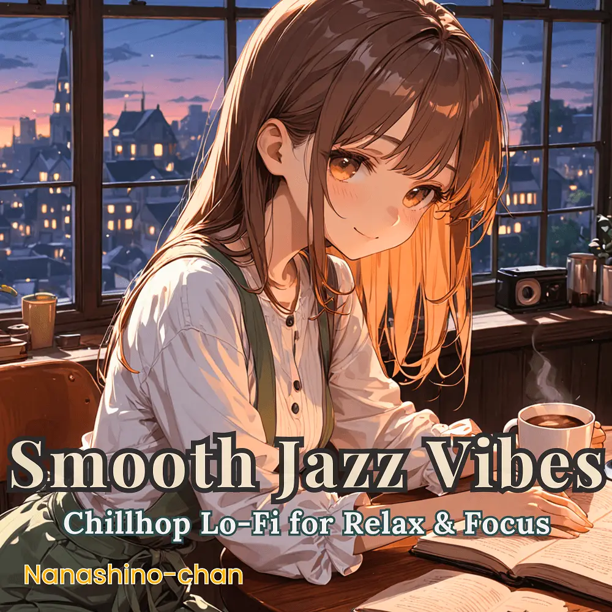

Chillhop · Lo-Fi · Jazz · Instrumental
Smooth Chillhop Jazz Beats: Lo-Fi Grooves for Relaxation & Focus
Nanashino-chan
Nanashino-chanの「Smooth Chillhop Jazz Beats: Lo-Fi Grooves for Relaxation & Focus」。Chillhop / Lo-Fi / Jazz / Instrumentalを楽しめる全21曲のインストゥルメンタル作品です。「Morning Haze / Calm Reflections」などを収録。気になる曲を試聴して、配信サービスでお気に入りを見つけてください。
2025-03-07 リリース · 21 曲 · Instrumental
アルバムを試聴
気になる音楽を、ここから。
曲を選ぶまでジャケットを表示します。試聴にはYouTubeを使用します。
YOUTUBE PREVIEW
試聴する曲を選んでください
曲を選ぶまでジャケットを表示します。試聴にはYouTubeを使用します。
再生できない場合は、配信サービスでアルバムや曲を開いてください。
配信サービスでアルバムを探す
「検索」のリンクは検索結果を開きます。サービス内でアルバムや曲を選択してください。
収録曲一覧 21
- 01Morning Haze
- 02Calm Reflections
- 03Whispering Jazz
- 04Urban Serenity
- 05Velvet Nights
- 06Relaxed Transitions
- 07Echoes of Solitude
- 08Lazy Sunset
- 09Golden Horizon
- 10Dreamy Beats
- 11Serene Moments
- 12Soft Radiance
- 13Evening Glow
- 14Deep Meditations
- 15Midnight Reverie
- 16Warm Nights
- 17Smooth Groove
- 18Gentle Jazz Echoes
- 19Twilight Dreams
- 20Endless Calm
- 21Velvet Reflections
SNSで使いたい音源を探す
「Nanashino-chan ＋ 曲名」をコピーして、SNSアプリの音源検索に貼り付けてください。音源の表示は地域やアカウントにより異なります。コピー機能は利用許諾を付与するものではありません。